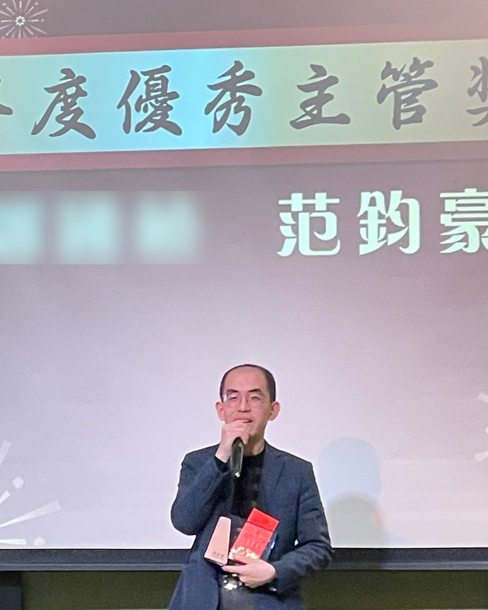
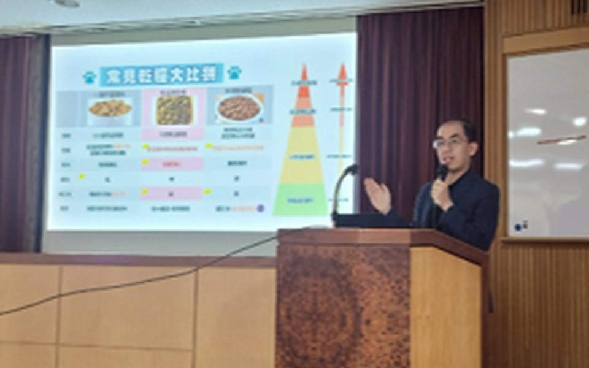
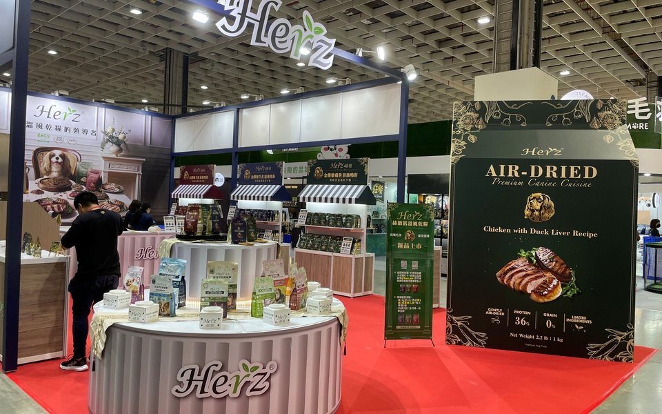
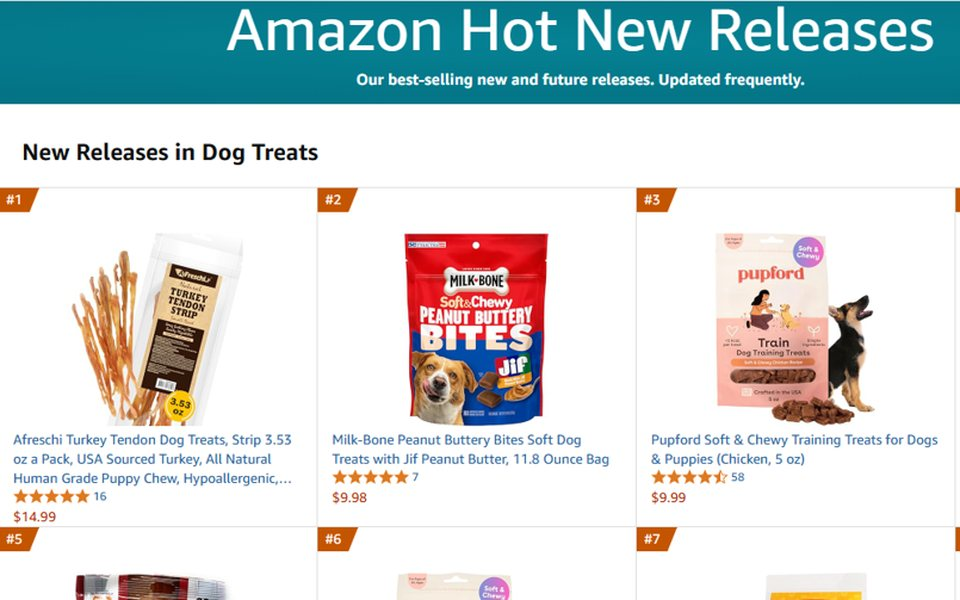
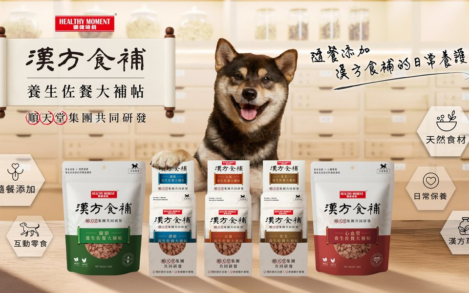
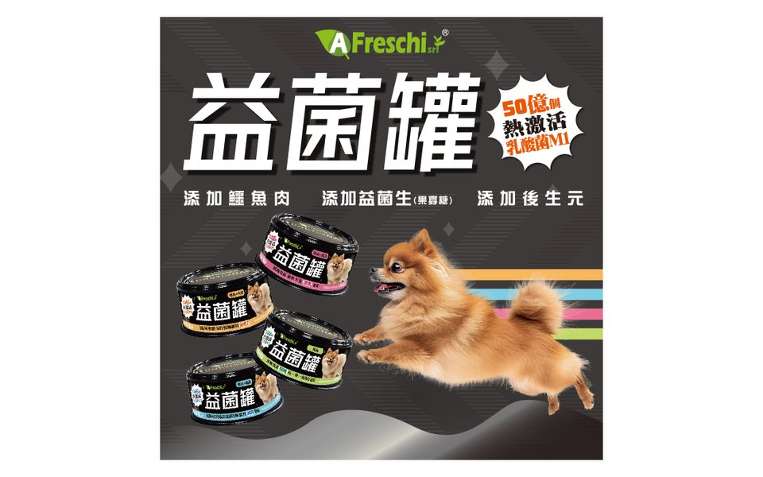
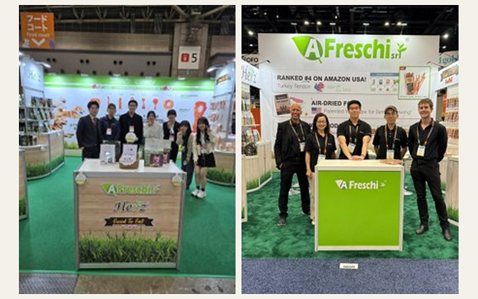
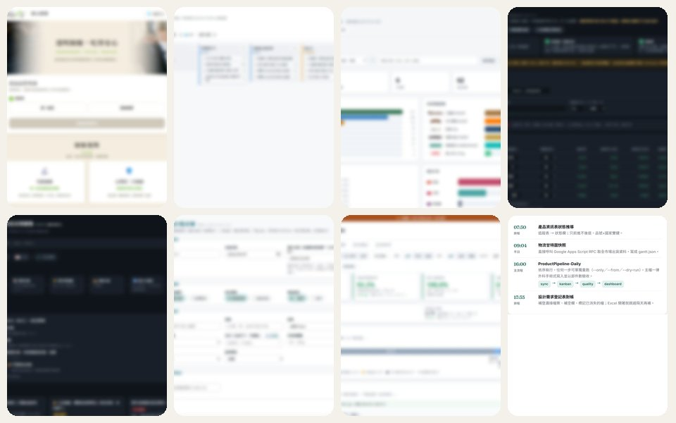

六年寵物產業，走過經銷商、品牌商、製造商，做過行銷、產品與法規。把臨床專業，轉化成獸醫師與飼主聽得懂的產品與品牌價值；再用 AI 把重複的工作做成系統。Six years across distributor, brand and manufacturer roles in companion-animal products — marketing, product and regulatory. Turning clinical expertise into product and brand value that vets and pet owners trust — and turning repetitive work into systems with AI.
在診間，醫療能改變的是一條生命；產業與制度，能影響更多動物的長期健康。所以我走出診間，投入伴侶動物產業：做過經銷商的顧問獸醫、動物醫院通路的技術行銷、品牌商的產品經理，到製造商的行銷經理與產品開發經理。職涯四個篇章，一個邏輯：把專業轉化成獸醫師與飼主都聽得懂的價值。In the clinic, medicine changes one life at a time; industry and its standards shape the long-term health of many more animals. That is why I left the clinic for the companion-animal industry — consultant vet at a distributor, technical marketing in the veterinary-hospital channel, product manager at a brand, then marketing manager and product development manager at a manufacturer. Four chapters, one logic: turn expertise into value that vets and pet owners understand.
台大五年臨床養成：從症狀、檢驗與飼主描述建立真相。臨床也教我一條原則：沒有「差不多」，只有「有沒有即時」——異常是訊號，不是雜訊。這套思維，後來成了我做產品與品質把關的底層邏輯。Five years of clinical training at NTU — building truth from symptoms, tests and what families describe. The clinic also taught me one rule: there is no "close enough", only "in time or not" — an anomaly is a signal, not noise. That mindset became the bedrock of how I run product and quality today.
Farmina、Dr. Clauder's 顧問獸醫，為動物醫院與寵物店做產品教育；再到動物醫院通路做再生醫學的技術行銷。學會把實驗數據變成診間與貨架都能用的故事。Consultant vet for Farmina and Dr. Clauder's, training veterinary hospitals and retailers; then technical marketing of regenerative medicine in the vet-hospital channel. Learned to turn lab data into stories that work in the clinic and on the shelf.
加入珍食堡時，前一批行銷成員已集體離職。從組織圖與權責分工重建，再建流程與決策機制；一年後部門穩定運作、獨立成立台北辦公室。帶 8 人團隊操盤年度 GTM、寵物展、KOL 與媒體採買，台灣電商成長 600%、Amazon 日本店營收翻倍，獲 2024 年度優秀主管。When I joined Jasper Petcare, the previous marketing team had left en masse. I rebuilt from the org chart and role definitions up, then added process and decision rhythms; a year later the department ran steadily and spun off into its own Taipei office. Led an 8-person team through annual GTM, pet expos, KOL programs and media buys — 600% Taiwan e-commerce growth, doubled Amazon Japan revenue, 2024 Outstanding Manager.
到職半年內主導導入臺大動科系技術移轉的後生元原料，克服製程造成的機能流失，做出有差異化的產品並導入通路。以獸醫師身分主動加入公司食安小組，建立內外部檢驗機制與更高的允收標準，讓品質從個人經驗變成制度。現在負責 6 個品牌、9 個市場的新品開發與法規。Within six months of joining, led the adoption of a postbiotic ingredient licensed from NTU Animal Science, solved the functional loss caused by the existing process, and launched a clearly differentiated product into retail. As the company's veterinarian, joined the food-safety task force uninvited and set up internal/external testing and stricter acceptance criteria — turning quality from personal judgement into a system. Now leading new product development and compliance across 6 brands and 9 markets.
即使從商，也要成為有良心的商人；
即使不在臨床，也要持續守護動物健康。Even in business, be a merchant with a conscience.
Even outside the clinic, keep guarding animal health.支撐我每一個產品與品質決策的核心價值The value behind every product and quality decision I make


為 PetPark、THL 等通路夥伴、寵物店與動物醫院設計產品與營養訓練，把成分與臨床證據轉成一線可用的話術。Product and nutrition training for channel partners (PetPark, THL), retailers and veterinary hospitals — turning ingredients and clinical evidence into front-line messaging.

年度 GTM 與 campaign 行事曆，串起寵物展活動、KOL／KOC 合作、Meta／Google／LINE 與交通媒體採買。Annual GTM and campaign calendars tying together pet expo activations, KOL/KOC programs and Meta/Google/LINE/transit media buys.

台灣電商營收成長 600%；接手 Amazon 日本店讓營收翻倍並導入新品，同步操盤美國店廣告與旗艦店。600% Taiwan e-commerce growth; doubled Amazon Japan revenue and launched new SKUs; ran US store ads and storefront.

推動與順天堂藥廠合作，開發關節、毛髮、視力、心血管的功能性保健品，從配方邏輯到宣稱邊界一起把關。Partnered with Sun Ten Pharmaceutical on joint, coat, vision and cardiovascular supplements — from formulation logic to claim boundaries.

到職半年內主導導入臺大動科系技術移轉的後生元原料，克服既有製程造成的機能流失，把學術概念轉成飼主聽得懂的產品價值並導入通路。Within six months, led adoption of an NTU-licensed postbiotic ingredient, solved process-induced functional loss, and turned an academic concept into a product pet owners understand — then into retail.
配方、包裝與宣稱對齊台灣食安法、AAFCO、日本薬機法／景表法；包裝稿三方比對，降低標示與法規風險。Formulation, packaging and claims aligned to Taiwan Food Safety Act, AAFCO and Japan Yakukihō / Keihyōhō; three-way proof checks to cut labeling risk.

每年走訪 Interzoo、Global Pet Expo、SuperZoo、Interpet、VIV Asia 等 6+ 展會，做競品分析、原料趨勢與供應商談判。6+ shows a year — Interzoo, Global Pet Expo, SuperZoo, Interpet, VIV Asia — for competitor analysis, ingredient trends and supplier talks.

以 Claude 為共同開發者，做出 8 個內部網站（品質溯源、新品看板、產品資訊儀表板、成本試算、法規索引…）與每天 16:00 自動跑的資料流水線，全部跑在免費方案上。With Claude as co-developer, built 8 internal web tools (quality traceability, product Kanban, product dashboard, cost calculator, regulations index…) and a daily 16:00 data pipeline — all on free tiers.
執照獸醫、台大臨床獸醫碩士。為 Farmina、Dr. Clauder's 與再生醫學療法做動物醫院與寵物店教育，把實驗數據講成診間與貨架都聽得懂的話。Licensed DVM, MSc NTU. Trained veterinary hospitals and retailers for Farmina, Dr. Clauder's and regenerative therapies — turning lab data into clinic- and shelf-ready messaging.
制定多品牌年度 GTM 與 campaign 行事曆；寵物展、KOL／KOC、Meta／Google／LINE 與交通媒體採買；台灣電商營收成長 600%。Annual GTM plans and campaign calendars across brands; pet expos, KOL/KOC, Meta/Google/LINE and transit media; 600% Taiwan e-commerce growth.
每年走 6+ 場國際展會（Interzoo、Global Pet Expo、SuperZoo、Interpet、VIV Asia）；把新品提案標準化成競品格局、定位象限、三階定價的固定框架。6+ international shows a year (Interzoo, Global Pet Expo, SuperZoo, Interpet, VIV Asia); standardized proposals into a fixed framework — landscape, positioning map, three-tier pricing.
PMP · CSM · CSPO。從零重建 8 人團隊，100+ SKU 準時上市；用設計需求單流程與進度看板讓六個部門看同一份進度。PMP · CSM · CSPO. Rebuilt an 8-person team from zero and shipped 100+ SKUs on time; design-request workflow and a live Kanban keep six departments on one view of progress.
Amazon 日本店營收翻倍並導入新品、操盤美國店廣告；momo／PChome／91APP 台灣電商；Amazon Sponsored Ads Advanced 認證。Doubled Amazon Japan revenue and launched new SKUs; ran US store advertising; momo / PChome / 91APP in Taiwan; Amazon Sponsored Ads Advanced certified.
配方、包裝與宣稱對齊台灣食安法、AAFCO、日本薬機法／景表法；包裝稿三方比對校稿；自建台美日法規索引站與合規檢查流程。Formulation, packaging and claims aligned to Taiwan Food Safety Act, AAFCO and Japan Yakukihō / Keihyōhō; three-way label proofing; built a TW/US/JP regulations index and compliance-check workflow.
以 Claude 為主力共同開發者（也用 ChatGPT／Codex、Gemini），做出 8 個內部網站與 1 條每天自動跑的資料流水線；新模型出來先親自測，再決定推給團隊。Claude as primary co-developer (plus ChatGPT/Codex and Gemini): built 8 internal web tools and a daily data pipeline; I test every new model hands-on before rolling it out to the team.
歡迎來信交流。I welcome a conversation.